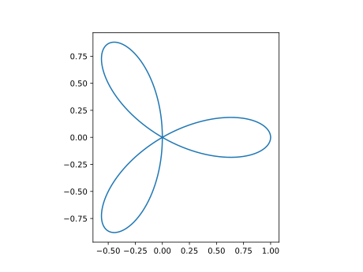
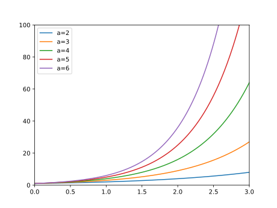

第3回：▶︎ 連続な曲線を描く
▶︎ 関数が連続とは
が存在して、その値が $f(a)$ に等しいとき、 「関数 $f(x)$ は $x=a$ で連続という」
▶︎ 正弦関数・余弦関数を描く
正弦 $y = \sin{x}$
余弦 $y = \cos{x}$
ラジアン単位の正弦、余弦 sin, cos
using PyPlot
xs=-2pi:pi/360:2pi
plot(xs, cos.(xs), label="cos")
plot(xs, sin.(xs), label="sin")
xlabel("radian")
legend()
円周率単位の正弦、余弦 sinpi, cospi
using PyPlot
xs=-2:1/360:2
plot(xs, cospi.(xs), label="cospi")
plot(xs, sinpi.(xs), label="sinpi")
xlabel("pi")
legend()
角度単位
角度単位の正弦、余弦 sind, cosd
using PyPlot
xs=-360:1:360
plot(xs, cosd.(xs), label="cosd")
plot(xs, sind.(xs), label="sind")
xlabel("degree")
legend()▶︎ 楕円を描く
楕円を陰関数で表示すると、
楕円を媒介変数表示(パラメータ曲線)すると
媒介変数表示を用いて、楕円上の各点を計算しよう。
using PyPlot
ts=0:pi/18:2pi
xs=2*cos.(ts)
ys=sin.(ts)
plot(xs,ys)
xlim(-3,3)
ylim(-3,3)
plt[:axes]()[:set_aspect]("equal")▶︎ アルキメデスの渦を描く
平面座標上の点 $（x,y)$は、 極座標 $(r, \theta)$ でも表示できる。 $x,y$と $r, \theta$ との対応は
である。
次の関係で結ばれた曲線を、アルキメデスの渦という。
これを描いてみよう。
using PyPlot
ts=0:pi/1800:2pi
xs=ts .* cos.(ts)
ys=ts .* sin.(ts)
plot(xs, ys)
plt[:axes]()[:set_aspect]("equal")◀︎ 練習
上では $\theta \ge 0$ の範囲で、曲線を描いた。 パラメータ $\theta < 0$ の範囲まで含めたら、どのような曲線になるか？ 予想した上で、プログラムを書き実行し、確かめてみよ。 予想と一致していたか？
▶︎ 花曲線を描く
flower curve
using PyPlot
n=3
ts=0:pi/1800:2pi
rs=cos.(n*ts)
xs=rs .* cos.(ts)
ys=rs .* sin.(ts)
plot(xs, ys)
plt[:axes]()[:set_aspect]("equal")
▶︎ 指数関数を描く
using PyPlot
xs=-10:0.01:10
plot(xs, 2.^xs)
plot(xs, 2.^xs)
plot(xs, 3.^xs)
plot(xs, 4.^xs)
plot(xs, 5.^xs)
xlim(0,3)
ylim(0,100)
plot(xs, 2.^xs, label="a="*string(2))
plot(xs, 3.^xs, label="a="*string(3))
plot(xs, 4.^xs, label="a="*string(4))
plot(xs, 5.^xs, label="a="*string(5))
plot(xs, 6.^xs, label="a="*string(6))
legend()
xlim(0,3)
ylim(0,100)
定数 eは、自然対数の底である。
julia> e
e = 2.7182818284590...関数 xscale, yscale は、 それぞれ x軸、y軸のスケールを指定する関数である。 何も指定しない場合（既定値）は 線形 linear である。 log を指定すると、10の対数で、その軸を描く。
for a in [2,e,3,4,5,6]
plot(xs, a.^xs, label="a="*string(a))
end
yscale("log")
xlim(-1,3)
ylim(1e-1,1e3)
legend()
exp2: 底が 2 の指数関数exp: 自然対数 (底は、自然対数の底)exp10: 底が 10 の指数関数
plot(xs, exp2.(xs), label="exp2")
plot(xs, exp.(xs), label="exp")
plot(xs, exp10.(xs), label="exp10")
yscale("log")
xlim(-1,3)
ylim(1e-1,1e3)
legend()
関数も名前である。
for f in [exp2,exp,exp10]
plot(xs, f.(xs), label=string(f))
end
yscale("log")
xlim(-1,3)
ylim(1e-1,1e3)
legend()
▶︎ 冪乗根を描く
($x \ge 0$ : 非負数を定義域とする関数)
Base.sqrt : ２乗根
Base.Math.cbrt : ３乗根
julia> sqrt(2)
1.4142135623730951
julia> sqrt(3)
1.7320508075688772
julia> sqrt(-1) # DomainError
ERROR: DomainError:
julia> sqrt(complex(-1,0)) # 複素数を引数に与える
0.0 + 1.0imusing PyPlot
xs=0:0.01:3
plot(xs, sqrt.(xs), label="sqrt")
plot(xs, cbrt.(xs), label="cbrt")
legend()
xscale("log")
yscale("log")
xlim(1/2,2)
ylim(1/2,2)
plt[:axes]()[:set_aspect]("equal")
using PyPlot
xs=0:0.01:3
for f in [sqrt,cbrt]
plot(xs, f.(xs), label=string(f))
end
legend()
xscale("log")
yscale("log")
xlim(1/2,2)
ylim(1/2,2)
plt[:axes]()[:set_aspect]("equal")
using PyPlot
xs=0:0.1:3
plot(xs, xs.^(1/2), label=2)
plot(xs, xs.^(1/3), label=3)
plot(xs, xs.^(1/4), label=4)
plot(xs, xs.^(1/5), label=5)
xlim(0,3)
ylim(0,3)
plt[:axes]()[:set_aspect]("equal")
using PyPlot
xs=0:0.1:3
for n in 2:5
plot(xs, xs.^(1/n), label=n)
end
xlim(1/3,3)
ylim(1/3,3)
xscale("log")
yscale("log")
plt[:axes]()[:set_aspect]("equal")
▶︎ 対数関数
(正数を定義域とする関数)
julia> log(1)
0.0
julia> log(e)
1
julia> log(e^2)
2.0
julia> log(-1) # DomainError
ERROR: DomainError:using PyPlot
using PyPlot
xs=0.1:0.01:100
0.1:0.01:100.0
plot(xs, log.(xs))
軸を対数で表⽰すると、直線で表⽰される。
plot(xs, log.(xs))
xscale("log")
plot(xs, log.(2,xs), label=string(2))
plot(xs, log.(xs), label=string(e))
plot(xs, log.(3,xs), label=string(3))
plot(xs, log.(10,xs), label=string(10))
xscale("log")
legend()
for a in [2, e, 3, 10]
plot(xs, log.(a,xs), label=string(a))
end
xscale("log")
legend()
plot(xs, log2.(xs), label="log2")
plot(xs, log.(xs), label="log")
plot(xs, log10.(xs), label="log10")
xscale("log")
legend()
for f in [log2, log, log10]
plot(xs, f.(xs), label=string(f))
end
xscale("log")
legend()
▶︎ ダブルYグラフを描く
ダブルYグラフは、 $x$軸を共通として、左と右に、二つの $y$軸を配置するグラフである。
using PyPlot
xs=-2:0.1:2
fig=plt[:figure]()
ax1=fig[:add_subplot](111)
ax1[:plot](xs, -xs, "r")
ax2=ax1[:twinx]()
ax2[:plot](xs, xs.^2, "b")
savefig("ch04-tw1-plot.svg"); nothing # hide
これを描くには、次の手順をとる。 まず、以下のように、 元となる座標系(左$y$軸)のデータ（オブジェクト）ax1を取得する。
fig=plt[:figure]()
ax1=fig[:add_subplot](111)次に、以下のように、 $x$軸が共通な、新しい座標系(右$y$軸)のデータ（オブジェクト）ax2を作成する。
ax2=ax1[:twinx]()座標系 axに対して描画するには、ax[:plot](<<plot引数>>) の形式を用いる。
using PyPlot
xs=-2:0.1:2
fig=plt[:figure]()
ax1=fig[:add_subplot](111)
ax1[:plot](xs, -xs, "r")
ax2=ax1[:twinx]()
ax2[:plot](xs, xs.^2, "b")▶︎ 自由落下運動を描く
鉛直上向きに投げられた球が、重力のみを感じて自由落下するとする。 時刻 $t=0$において、高さ $y=0$, 鉛直上向きの速度 $v_0$ とすると、 時刻 $t$における、高さ $y$, 鉛直上向きの速度 $v$ は、以下のように表される。
, $y = v_0 t - \frac{1}{2}gt^2$
using PyPlot
v0=10 # m/s
g=9.8 # m/s^2
ts=0:0.1:3 # s
vs=v0-g*ts
plot(ts,vs)
ys=v0*ts-g*ts.^2/2
plot(ts,ys)ax1=plt[:subplot]()
ax2=ax1[:twinx]()
ax1[:plot](ts,vs)
ax2[:plot](ts,ys)
続けて
ax1[:set_xlabel]("time /s")
ax1[:set_xlim](-0.3,2.3)
ax1[:set_ylim](-12,12)
ax2[:set_ylim](-6,6)
ax1[:set_ylabel]("velocity / m s^-1")
ax2[:set_ylabel]("height / m")
続けて
ax1[:axvline](10/9.8, color="k", lw=0.5)
ax1[:axvline](0, color="k", lw=0.5)
ax1[:axhline](0, color="k", lw=0.5)
▶︎ 複数のグラフを描く
花曲線の例で $n$を変えてみる。
グラフのプロット領域を分割するには、以下の命令を用いる。
ax=plt[:subplot](<<ijk>>)
<<ijk>>は３桁の整数である。 百の位 iは、縦（行）の分割数、 十の位 jは、横（列）の分割数である。 一の位は、取得するプロット番号であり、 1から順に、左から右、上から下に振られる。
using PyPlot
ts=0:pi/1800:2pi
for i=1:6
n=i+2
ax=plt[:subplot](330+i)
rs=cos.(n*ts)
xs=rs .* cos.(ts)
ys=rs .* sin.(ts)
ax[:plot](xs,ys)
ax[:set_xlim](-1,1)
ax[:set_ylim](-1,1)
ax[:set_aspect]("equal")
end
★ 今回のまとめ
全域で定義された関数
正弦・余弦関数
楕円
アルキメデスの渦
花曲線
指数関数
正数を定義域とする関数
対数関数
複数のグラフを描く方法